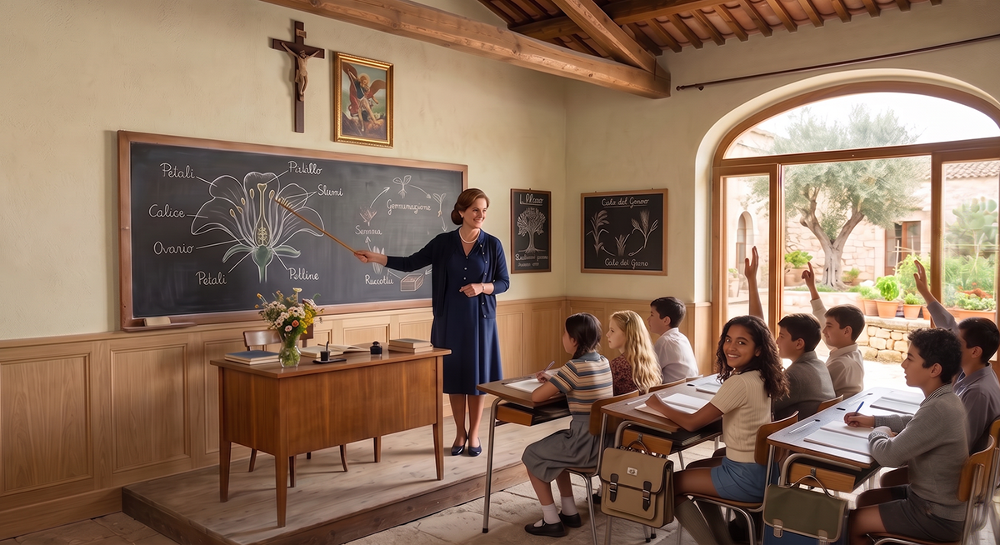
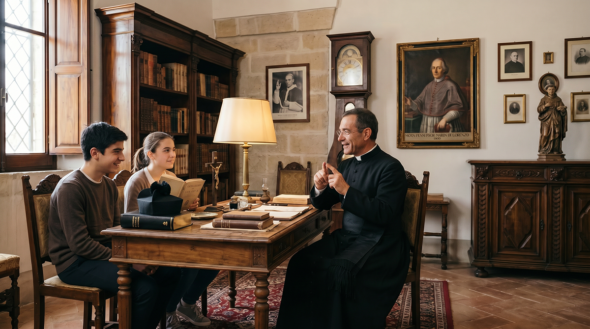

Potential Candidates
Who We’re Looking For

We are looking for Italian families who have made a conscious and deep decision: no longer to endure the frenetic, precarious and often dehumanizing rhythm of contemporary life in the large urban areas.
Families with parents between 35 and 50 years old, with one or more children (ideally aged 3 to 16), who wish to undertake a values-based and generational change: leave the anonymity, stress and insecurity of the metropolises to build, in the Iblean territory of south-eastern Sicily, something stable, beautiful, rooted and lasting.
We are not simply looking for buyers or passive residents. We are looking for family units ready to become active and responsible members of a traditional intentional community, the first nucleus of Baglio San Michele. A community founded on the principles of Sicilian Slow Living, daily reciprocity, intergenerational transmission of Christian values and Sicilian culture, and responsibility toward the common good.
The historical context and the reasons for this choice
We are living through a historical moment in which many of the certainties on which families have built their lives are fading. Automation and artificial intelligence are redefining the labour market. Large cities are becoming progressively more expensive, anonymous and difficult to manage with children, while global policies weaken family farming and the food sovereignty of our country.
In this scenario, the possibility of guaranteeing one’s children a safe environment, authentic human relationships, access to healthy food and the transmission of solid values is no longer a given. It becomes instead a strategic and generational choice.
Baglio San Michele is born precisely as a concrete and rooted response to these transformations: a place in which to rebuild conditions of stability, autonomy and a sense of belonging that elsewhere are becoming increasingly difficult to preserve.
The deep motivations that guide the choice

Education of children
You desire a context in which children grow up in contact with nature, with present adults and with clear values to transmit daily, instead of being educated mainly by screens and anonymous institutions.

Stability and security
You seek a predictable and protected place, where the family can plan the future without the continuous anxiety of sudden change or precariousness.

Quality of relationships
You want to build real and lasting bonds with other families who share the same values, instead of living in contexts where relationships remain superficial.

Transmission of values
You are aware that your children will grow up in a context in which faith, tradition and the sense of responsibility are lived daily, not only taught in words.
The ideal family profiles for the pilot project

Families seeking roots
They live in the large cities and feel every day the fatigue of raising children in a frenetic, anonymous and precarious environment. They desire a concrete alternative: a place where children can have stability, authentic relationships and a rooted future.

Traditional Catholic families
For whom the spiritual dimension and the transmission of the Christian faith are not optional. They seek a context in which faith can be lived and transmitted naturally within a community that actively supports it.

Families and singles oriented toward craftsmanship and trades
People who believe in the value of manual work, concrete competence and the intergenerational transmission of trades. They desire a place in which these skills can be exercised, learned and handed down.

Families and singles oriented toward Sicilian Slow Living
People tired of frenzy, standardization and the loss of the measure of time. They seek a slower, more authentic and harmonious pace of life with the landscape and the seasons of the Iblean territory.
The selection and admission process
The admission process to Baglio San Michele is gradual and reciprocal. It is not a simple real-estate transaction, but a process of mutual knowledge aimed at verifying values alignment and the willingness to actively contribute to community life.
Application
Introductory interview
Residential visit
Trial period
Formal admission
For Phase 1 of the pilot project, 14 residential units are planned inside the restored historic Baglio.
Let’s get to know each other
If you recognize yourself or your family in one of these profiles, we invite you to take the first step. The admission process is gradual and reciprocal.